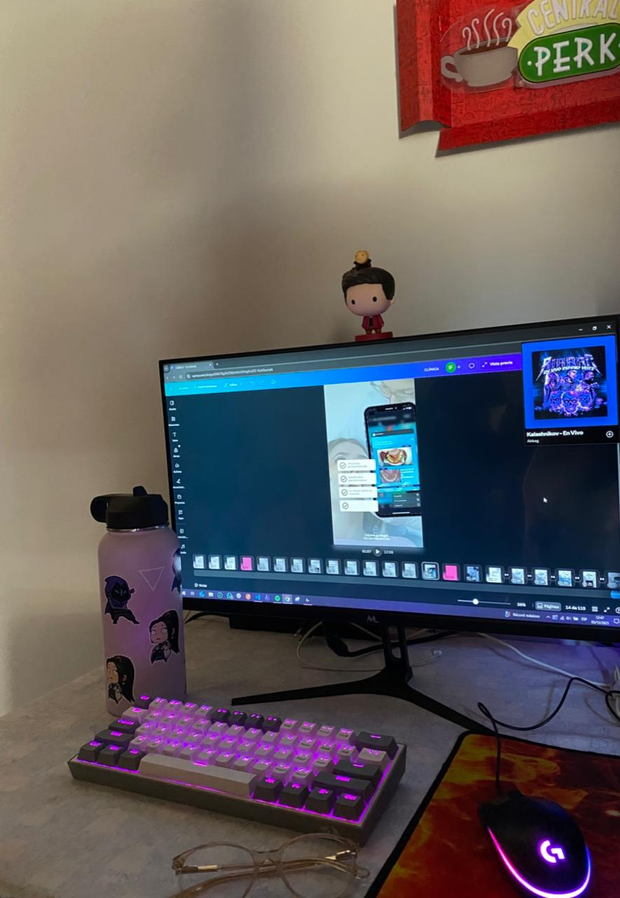

Mi nombre es Sara, vivo en Capiatá. Me considero una persona empática y detallista, disfruto tener todo bien organizado (¡sí, amo anotar! 📝).
Actualmente trabajo de forma remota iniciándome como Tester Junior para la empresa MT, y también colaboro en la edición y creación de contenido digital.
Sigo explorando el mundo del testing y la inteligencia artificial, dos áreas que despiertan mucho mi curiosidad.
En el 2022 obtuve mi título de Licenciatura en Análisis de Sistemas. Mi tesis fue el desarrollo de un sistema desktop de gestión académica, operativa y documental para una institución educativa, programado en Java con base de datos MySQL.
Actualidad
Mi rincón fav.
